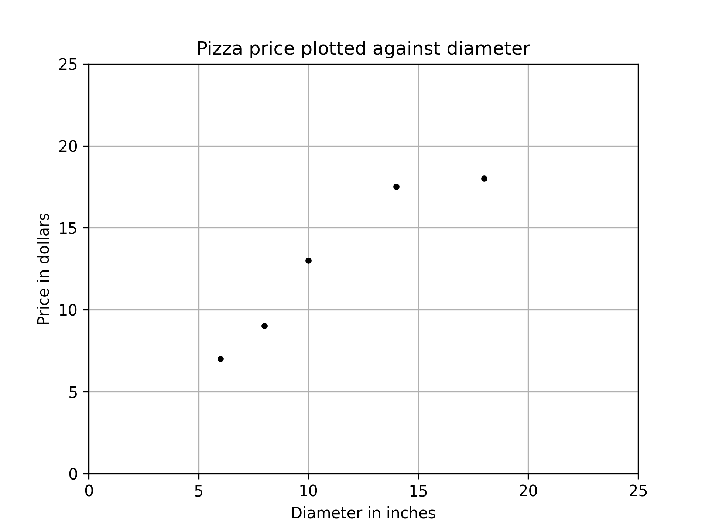

迴歸
Table of Contents

1. 簡介
1.1. 迴歸類型
即，根據一組預測特徵（predictor，如里程數、車齡、品牌）來預測目標數值（如二手車車價）1，這個目標數值也叫label。
部份迴歸演算法也可以用來分類，例如Logistic，它可以輸出一個數值，以這個數值來表示對應到特定類別的機率，例如，某封email為垃圾郵件的機率為20%、某張圖片為狗的機率為70%。
迴歸問題可分為兩類：
- Linear regression:
- 假設輸入變量(x)與單一輸出變量(y)間存在線性關係，並以此建立模型。
- 優點: 簡單、容易解釋
- 缺點: 輸入與輸出變量關係為線性時會導致低度擬合
- 例: 身高與體重間的關係
- Logistic regression
- 也是線性方法，但使用logist function轉換輸出的預測結果，其輸出結果為類別機率(class probabilities)
- 優點: 簡單、容易解釋
- 缺點: 輸入與輸出變量關係為線性時無法處理分類問題
典型迴歸案例: Boston Housing Data
1.2. 迴歸原理
1.2.1. Step 1
- Model: \(y = w*x+b\)
- Data: 找一堆現成的資料
1.2.2. Step 2: Goodness of Function
- Training Data
- Loss function L: 越小越好 input: a function / output: how bad it is
- Pick the Best Function : \(f* = arg min L(f)\) 上述可以微分來求最佳解，即求 function L 的最小值
- 數值最佳解: Gradient Descent(找拋物線/面最低點)
1.3. 迴歸預測流程(以波士頓房價預測為例)
- Import the required module
- Load and configure the Boston housing data set
- Chekc the relation between the variable, using pairplot and correlation graph
- Descriptive statistics: central tendency and dispersion
- Select the required columns
- Train the test split
- Normalize the data
- Build the input pipeline for the TensorFlow model
- Model tranining
- Predictions
- Validation
2. 線性迴歸:年齡身高預測#1
2.1. 資料生成
這是當初上帝創造人類時決定人類身高的規則，我們也可以將之視為這組資料的模型，這個規則或模型是很神祕的，等一下我們要假裝我們不知道這個模型的存在，而迴歸的目的就在於想辦法猜出這個規則或模型。
import numpy as np import matplotlib.pyplot as plt n = 10 # 資料筆數 year = 5 + 25 * np.random.rand(n) # 年紀 height = 170 - 108 * np.exp(-0.2 * year) + 4 * np.random.randn(n) print(year) print(height)
[13.3, 16.2, 10.9, 28.7, 19.8, 14.2, 11.7, 26.6, 22.4, 18.3, 19.4] [163.61, 168.53, 155.06, 171.3 , 166.69, 160.98, 158.23, 165.27, 170.83, 161.31, 163.58]
2.2. 查看資料


2.3. 直線模型
我們可以在圖2中畫上無數條線，但，最能代表年齡和身高關係的線應該只有一條，我們要如何找出這條線？
首先，既然我們想以 直線 來表示我們想找的模型或規則，那我們就先把這條直線以下列數學示表示出來: \[y=ax+b\] 或 \[f(x)=ax+b\] 這樣的直線 \(y\) 或函數 \(f(x)\) 有無限多個，迴歸的目的就是要為函數 \(f(x)\) 找出一組最好的參數 \(a,b\)，或是為直線 \(y\) 找到最適合的斜率 \(a\) 和截距 \(b\)。這也是現今許多AI模型的基本精神：找到一組最好的參數，或者說：從無數個可能的模型中挑出最好的一個。
為了從無限多個備選模型中找出最佳的，我們需要有一個評估機制。
2.4. 損失函數
損失函數(loss function)也稱為成本函數(cost function)，就是最常用來定義、衡量模型誤差的方法。以圖3為例，我們可以計算所有原始資料\((x_0, y_0) \dots (x_9, y_9)\) 離這條預測線的距離(預測結果為 \(\hat{y_0} \dots \hat{y_9}\))，這些距離( \(y_0 - \hat{y_0} \dots y_9 - \hat{y_9}\) )的總和越小，表示預測線離每一點越近，也就是說這個模型越準確。

Figure 3: 直線模型的均方誤差
圖3中的 \(y_i\) 為實際資料 \(x_i\) 對應的結果， 而 \(\hat{y_i}\) 則是將每個實際資料 \(x_i\) 丟入模型後的預測結果，計算 \(y_i\) 與 \(\hat{y_i}\) 誤差的方法稱為 殘差平方和 (Residual Sum of Squares, RSS)，計算公式為 \[ RSS = \sum_{i=1}^{n}(\hat{y_i}-y_i)^2 \] 把RSS再除以n就或是 均方差 (Mean Square Error, MSE)，即 \[ MSE = \frac{1}{n}\sum_{i=1}^{n}(\hat{y_i}-y_i)^2 \] 迴歸的任務就是把RSS或MSE最小化。
如何讓RSS/MSE最小化呢？
2.5. 窮舉所有的可能性
為了找出哪一組參數 \(a,b\) 可以讓模型 \(y=ax+b\) 的預測誤差達到最小，我們可以將一些合理的a,b值可能組合都列出來，如圖4，我們列出了由參數 \(a\) (-40~40)、參數 \(b\) (40~160)的所有可能模型，圖中的 \(z\) 軸代表每一種模型產生的誤差(RSS)。由圖4可以看出兩件事:
- 參數 \(a\) 對模型誤差的影響遠大於參數 \(b\)
- 當參數 \(a\) 的值接近0時，所生成的模型會有較低的MSE，也就是模型預測能力較好

Figure 4: 不同a,b情況下的均方差
讓我們回憶一下等高線這個東西，如果我們把圖4當成某個山谷的地形圖(z軸為高度)，那我們就可以畫出這個區域的等高線圖5(先別管我是怎麼畫出來的)，從等高線圖5就能大概看出來當a的值約等於0、b的值約等於150時會有最低的SSE(如圖5中的紅點，這是我透過觀落陰得到的訊息)。

Figure 5: 不同a,b情況下的MSE(俯視/等高線)
總之，看起來是有辦法找到最佳的模型的(只是有點麻煩)，這個方法稱為梯度下降，在這裡我們先知道有這麼個方法、知道這個方法可以找出最佳模型就好，至於深入探討這個方法是如何運作這件事，等我搞清楚了再說吧(或是等你們上大學再自己去研究)…
2.6. 快速求出最佳解
雖然從無數組 \((a,b)\) 中找出最好的一組看似困難，不過其實許多現成的相關模組已經有了這些功能，例如scikit-learn。以底下的程式為例：
1: import numpy as np 2: from sklearn.linear_model import LinearRegression 3: 4: year = np.array([13.3, 16.2, 10.9, 28.7, 14.2, 11.7, 26.6, 22.4, 18.3, 20.4]).reshape([-1, 1]) 5: height = np.array([163.61, 168.53, 155.06, 168.3 ,158.98, 158.23, 165.27, 170.83, 161.31, 163.58]) 6: 7: model = LinearRegression() 8: model.fit(year, height) 9: 10: slope = model.coef_ 11: intercept = model.intercept_ 12: heightHat = year * slope + intercept 13: 14: print('斜率/Slope:', slope) 15: print('截距/Intercept:', intercept)
斜率/Slope: [0.58182444] 截距/Intercept: 152.74006747354875
在上述程式碼中，真正與計算迴歸有關的只有第7行(利用scikit-learn建立一個線性迴歸模型)與第8行(把手上的10組 \((a,b)\) 資料丟進模型訓練)， 夠簡單吧，這樣我們就能畫出一條斜率約為0.58、截距約為152.74的最佳迴歸線(如圖6):
Figure 6: 線性迴歸求解
2.7. 逐步找出最佳解
雖然我們可以快速的利用如scikit-learn這類第三方模組求出最佳解，但是相信對於有志投入AI領域的你來說，光知道如何快速求解顯然遠遠不夠，讓我們來搞清楚這到底是怎麼完成的。
2.7.1. 隨機的力量
萬事起頭難，要找出最佳的參數組合 \((a,b)\) ，最合理的方式就是我們 閉上眼睛 在圖4中隨意點圈出一個點 \((a_0, b_0)\)，這就是我們的第一步，其結果就如圖7所示。有了這個開頭，我們接下來要做的事就是：
- 找出 一個方法 來判斷要由點 \((a_0, b_0)\) 點沿著這個曲面的 哪一個方向 前進 多遠 ，來到下一點 \((a_1, b_1)\)。也許是沿著曲面往上移一小段(如圖7中的藍色線段)、也許是沿著曲面往下移一小段(如圖7中的紅色線段)。
- 利用 同一個方法 來判斷接下來要由點 \((a_1, b_1)\) 點沿著這個曲面的 哪一個方向 繼續前進 多遠 ，來到下一點 \((a_2, b_2)\)
- 重複同樣的步驟，直到找到最佳的點 \((a_n, b_n)\) ，也就是這一點 \((a_n, b_n)\) 能使整個模型的SSE來到最小，讓模型具備最佳的預測效能。

Figure 7: 找出最佳a,b組合的方法
2.7.2. 何去何從
發現了嗎？其實我們就只是在求某個方程式的最小值。
到這裡我想你一定會發現上面那個方法的幾個漏洞：
- 我怎麼知道要往哪個方向移呢？
- 我怎麼知道要移動多長的距離呢?
- 我怎麼知道移動後的新位置比原來的位置好呢？
好吧，我也不知道。不如我們先跳過這個看起來太複雜的問題，先換個簡單點的來強化自信。
3. 保持距離以測安全
讓我們先來看一個更簡單的例子。
這是一組從R語言資料集偷來的資料，這個資料集有七百多組教學用的資料集，其中有一組簡單的資料集cars，裡面有50筆資料，每筆資料只有兩個欄位：
- speed: 車速
- dist: 所需剎車距離
資料分佈如圖8所示
Figure 8: 車速與剎車距離關係分佈圖
我們為了這組簡單的資料分佈建了一個如下的模型 \[dist=w*speed\] 建立這組模型的最終目的當然是希望輸入 車速 (\(speed\)) 後就能得到 預測的所需剎車距離 ( \(dist\) ) 。我們也可以用常見的數學表示法( \(x\) 為車速、\(y_{predicted}\) 為預測的剎車距離)： \[ y_{predicted} = w * x \] 或是更常見的寫法( \(\hat{y}\) 為預測的剎車距離)： \[ \hat{y} = w * x \] 我們的任務就是找到一個最佳的 \(w\) 值，也就是這個模型的參數。同時，為了評估不同 \(w\) 值下模型的優劣，我們當也要提出相對應的損失函數( \(\hat{y}\) 為模型預測的剎車距離、 \(y_i\) 為實際資料的剎車距離，\(n\) 為資料筆數，共有50筆資料)： \[ Loss = \frac{1}{n}\sum_{i=1}^{n}(\hat{y} - y_i)^2 \] 例如：
- 當 \(w\) 為-15時，Loss值為85113.26
- 當 \(w\) 為-10時，Loss值為44346.86
- 當 \(w\) 為 -5時，Loss值為16808.46
- 當 \(w\) 為 0時，Loss為2498.06
- 當 \(w\) 為 5時，Loss為1415.66
- 當 \(w\) 為 10時，Loss為17152.28
在這個例子中，我們的任務就變成：提出一個假設模型 \(f(x)=w*x\)，然後找出最理想的參數 \(w\)，讓這個模型可以俱備最好的預測能力(Loss值最小)。
3.1. 模型的目的
顯然，對於如何解出方程式(或是說找到最佳模型) ，一開始當然沒啥頭緒，那，不如就暴力一點吧，弄個窮舉法：試試從 \(w=-20\) try到 \(w=+20\) 吧，觀察一下損失函數Loss的變化：
Figure 9: 不同參數w下的損失函數Loss分佈圖
現在我們來想辦法找出最好的 \(w\) 在哪裡。
3.2. 沿著曲線上下爬
雖然我們從圖9大概可以看出來模型大概在參數 \(w\) 介於0和5之間會有最小的Loss，也就是模型會最準確，但身為嚴謹的學術研究者，我們不能這樣蠻幹，這是土匪的行為，我們要用最科學的方法：既然不知道從哪裡著手，就閉著眼睛隨意給個 \(w\) 好了，例如：-15，如圖10。
你看，我們這不就邁出成功的第一步了?
隨機就是這麼美而有力!!

Figure 10: 先隨機假設一個數(-15)為最佳參數w的值
有了出發點(我們估且稱之為 \(w_0\) 好了，如圖10)，接下來就只要決定下一個「較好的下一個 \(w\) 」是在 \(w_0\) 的左邊還是右邊(根據Loss值來判斷)，然後繼續往左或往右移(如圖11。
總之，我們只要決定以下兩個因素，就可以利用Python把模型的最佳參數 \(w\) 找出來了。
- 每次要往左或往右移多少距離?
- 這樣的修正動作要重複幾次？或者說，程式結束的條件為何？
Figure 11: 決定w應往哪個方向移動
3.3. 確定方向
相信學過幾何學的你一定有想到一種策略：切線。既然 \(w\) 與 \(Loss\) 的關係是如圖11的曲線，我們應該可以找出 \(w_0\) 這個點的 切線 ，根據這條切線的斜率(也就是點 \(w_0\) 的斜率)為正或負來判斷要往哪個方向移動，如果切線是負的，也就是一條左上右下的線，那我們就知道曲線的最低點應該是在這個點的右側。
讓我們從點 \(w_0\) 的 \(x\) 軸向左移動一段距離(例如5)，就會在曲線上找到 \(w_1\) 對應的 \(Loss_1\) ，然後連接點\((w_0, Loss_0)\) 、點\((w_1, Loss_1)\) ，就會得到一條經過點\((w_0, Loss_0)\) 的割線。

Figure 12: 決定w應往哪個方向移動#1
這條割線的斜率計算方式為 \[ Slope = \frac{\Delta Loss}{\Delta x} = \frac{Loss_0-Loss_1}{x_0-x_1} \] 讓我們進一步把 移動距離 縮到無限小，也就是把割線斜率中的 \(\Delta x\) 逼近於0，就能得到一條點 \((w_0, Loss_0)\) 的在曲線上的切線，其斜率計算方式為： \[f'(w_0)=lim_{w_1 \rightarrow w_0}\frac{f(w_1)-f(w_0)}{w_1-w_0}\]

Figure 13: 決定w應往哪個方向移動#2
以程式計算斜率的方式也很簡單，甚至不需要懂微分，所謂把 移動距離 縮到無限小，我們可以用作弊的方式，直接將 \(\Delta x\) 設為一個很小的值，例如 0.5。
1: from pydataset import data 2: import numpy as np 3: 4: # 取得資料集 5: cars = data('cars') 6: speed = np.array(cars['speed']) 7: dist = np.array(cars['dist']) 8: 9: # 計算Loss用的function 10: def loss_func(y_true, y_predict): 11: return y_true - y_predict 12: 13: w = np.arange(-20,21,0.5) 14: loss = [] 15: for i in w: 16: yHat = i * speed 17: loss.append(np.mean(loss_func(dist, yHat)**2)) 18: 19: 20: x, y = -5, loss[np.where(w == -5)[0][0]] 21: x1, y1 = -4.5, loss[np.where(w == -4.5)[0][0]] 22: # 計算切線斜率 23: print((y-y1)/(x-x1))
-4052.5999999999985
計算結果 \(Slope<0\) ，表示這是條左上右下的切線，顯然接下來該往右側去找到最低點。問題是：該往右邊移動多少距離呢？要移動幾次？
3.4. 確定移動距離與重複次數
由圖13中點 \((w_0, Loss_0)\) 的斜率可知應逐步往右移動w，Loss的值就會慢慢降下來，所以我們可以先這麼計畫：
- 每次由 \(w0\) 的 \(x\) 軸往右邊加0.5、直到Loss不再變小。
或換另一種說法：
- 每次往右邊加0.5、直到Loss開始變大(因為越過了曲線最低點)。
上述的Python實作程式碼如下：
1: from pydataset import data 2: import numpy as np 3: 4: # 取得資料集 5: cars = data('cars') 6: speed = np.array(cars['speed']) 7: dist = np.array(cars['dist']) 8: 9: # 計算Loss用的function 10: def loss_func(y_true, y_predict): 11: return y_true - y_predict 12: 13: w = np.arange(-20,21,0.5) 14: loss = [] 15: for i in w: 16: yHat = i * speed 17: loss.append(np.mean(loss_func(dist, yHat)**2)) 18: 19: # 找最佳w值, 這裡以x代表w值 20: x, y = -15, loss[np.where(w == -15)[0][0]] 21: while True: 22: loss = np.mean(loss_func(dist, x*speed)**2) 23: x += 0.5 24: newLoss = np.mean(loss_func(dist, x*speed)**2) 25: if newLoss >= loss: 26: print(f'STOP: w值:{x-0.5}, Loss:{loss}') 27: print(f'NEXT: w值:{x}, Loss:{newLoss}') 28: break 29: if int(x) % 5 == 0: 30: print(f'w值:{x}, Loss:{newLoss}')
逐步右移的控制主要由第21行的while負責，\(w\) 每次右移0.5，直到Loss值不再變小就停止(第25行)，為簡化輸出，每移動10次 \(w\) 我們就把對應的 \(w\) 和Loss輸出來觀察一下（第29行)。輸出結果如下：
w值:-10.5, Loss:47828.24 w值:-10.0, Loss:44346.86 w值:-5.5, Loss:18967.04 w值:-5.0, Loss:16808.46 w值:-0.5, Loss:3333.84 w值:0.0, Loss:2498.06 w值:0.5, Loss:1794.56 STOP: w值:3.0, Loss:261.26 NEXT: w值:3.5, Loss:351.44
由執行結果可發現隨著 \(w\) 值的增加，Loss值也隨之減少，直到 \(w\) 值為3時可以得到最低的Loss值(261.26)，過了這一點，Loss值便又開始增加。圖15為w值持續修正的模擬結果，圖14則為假設\(w\) 值為3所畫出的預測線(模型)。
Figure 14: 車速與剎車距離關係分佈及預測模型
然而，這個 \(w=3\) 的模型就是最佳模型嗎？你有什麼可以更快找到更精確的「使Loss最低的 \(w\) 值」的修正方案嗎？

Figure 15: 決定w應往哪個方向移動
3.5. 斜率與微分
為什麼 找出曲線上各點的斜率 這件事如此重要呢？原因有二
3.5.1. 頂點公式求函數解
如假設損失函數L為 \[ Loss = MSE = \frac{1}{n}\sum_{i=1}^{n}(\hat{y_i}-y_i)^2 \] 其中
- \(n=50\)(實際有50筆資料)
- \(\hat{y_i}\)為用模型\(y=wx\)所預測出來的剎車距離
- \(y_i\)為當實測車速為\(x_i\)時所對應的剎車距離
故
\begin{align} Loss=\frac{1}{n}\sum_{i=1}^{n}(\hat{y_i}-y_i)^2 \\ =\frac{1}{n}\sum_{i=1}^{n}(wx_i - y_i)^2 \\ =\frac{1}{n}\sum_{i=1}^{n}(w^2x_i^2 -2wx_iy_i + y_i^2) \\ =\frac{1}{n}(w^2\sum_{i=1}^{n}x_i^2 -2w\sum_{i=1}^{n}x_iy_i + ny_i^2) \\ \end{align}雖然可以用微分來解，但是這個一元二次函數也可以用頂點公式來找出曲線頂點(模型最小值)，求出的最小Loss會出現在 \[ w=\frac{\sum_{i=1}^{n}x_iy_i}{\sum_{i=1}^{n}x_i^2} \] 因為當 \(a>0\) \[ ax^2+bx+c = a(x+\frac{b}{2a})+\frac{4ac-b^2}{4a} \] 故 函數在 \(x=\frac{-b}{2a}\) 時有最小值
以程式驗證如下：
1: from pydataset import data 2: import numpy as np 3: 4: cars = data('cars') 5: speed = np.array(cars['speed']) 6: dist = np.array(cars['dist']) 7: 8: print('最小Loss的參數w值:',sum(speed*dist) / sum(speed*speed))
最小Loss的參數w值: 2.909132143937103
3.5.2. 微分求函數頂點
當 \(a>0\)
\begin{align} f(x)=ax^2+bx+c \\ f'(x)=2ax+b \end{align}找曲線最低點、令函式為0 \[2ax+b=0\] 故 \(x=\frac{-b}{2a}\) 時有最小值
4. 線性迴歸:年齡身高預測#2
回到第2.7節以年齡預測身高的例子，我們提及要找出最佳的參數組合 \((a,b)\) ，最合理的方式是在圖4中隨意點圈出一個點 \((a_0, b_0)\) (如圖7)。接下來：
- 找出 一個方法 來判斷要由點 \((a_0, b_0)\) 點沿著這個曲面的 哪一個方向 前進 多遠 ，來到下一點 \((a_1, b_1)\)。也許是沿著曲面往上移一小段(如圖7中的藍色線段)、也許是沿著曲面往下移一小段(如圖7中的紅色線段)。
- 利用 同一個方法 來判斷接下來要由點 \((a_1, b_1)\) 點沿著這個曲面的 哪一個方向 繼續前進 多遠 ，來到下一點 \((a_2, b_2)\)
- 重複同樣的步驟，直到找到最佳的點 \((a_n, b_n)\) ，也就是這一點 \((a_n, b_n)\) 能使整個模型的SSE來到最小，讓模型具備最佳的預測效能。
假設損失函數L為 \[ L = MSE = \frac{1}{n}\sum_{i=1}^{n}(\hat{y_i}-y_i)^2 \] 因為 \(\hat{y_i}\) 代表直線模型 \(y=ax+b\) 的預測結果。
實際的做法就變成：
- 計算點 \((a_0, b_0)\) 的斜率，然後朝著 使Loss(MSE)減小得最快的方向 稍微移動 \(a, b\)
- 重複步驟1
4.1. 梯度(Gradient)
為了符合機器學習的表達習慣，我們稍微修正一下上面的式子，將 \(a,b\) 改為 \(w_0, w_1\) ，因為對機器學習來說， \(a,b\) 都是模型的權重(weight) ，訓練模型的目的就是找出最佳的權重，讓模型的預測最準確，所以上述式子就變成了 \(y=w_0x+w_1\) 。
假設我們就站在下圖(圖16)中的點 \((w_0, w_1)\) 上，環顧四周，由這點往上的方向可以用 \(L\) 對 \(w_0,w_1\) 的偏導數向量 \( \begin{bmatrix} \frac{\delta L}{\delta w_0} \frac{\delta L}{\delta w_1} \end{bmatrix}^T \) ，也稱之為 梯度(gradient) ，以符號 \(\nabla_wL\) 表示。為了使 \(L\) 最小，我們要朝著著 \(L\) 梯度的反方向前進，也就是 \( -\nabla_wL = -\begin{bmatrix} \frac{\delta L}{\delta w_0} \frac{\delta L}{\delta w_1} \end{bmatrix}^T \)
Figure 16: 隨意於曲面指定一點(a,b)
確定移動方向後，我們就要來研究出一個適當的移動距離。我們先定義幾個表達式：
- \(\nabla_wL\) 為 \(w\) 的函數
- \(w(\tau)\) 代表目前的 \((w_0, w_1)\) 所在位置
- \(w(\tau+1)\) 代表下一次移動的新 \((w_0, w_1)\) 所在位置
- \(\alpha\) 為一個大於0的數，稱為學習率，用來控制調整權重的步幅，其值越大，調整的幅度就越大。典型的值可能為 \(0.001\)
- \(y_i\) 為實際由第i個年齡 對應 到的身高
- \(\hat y_i\) 為模型由第i個年齡 預測出來 的身高
兩個權重的下一步的調整步幅為：
- \(w_0(\tau+1) = w_0(\tau)-\alpha\frac{\partial L}{\partial w_0}\)
- \(w_1(\tau+1) = w_0(\tau)-\alpha\frac{\partial L}{\partial w_1}\)
因為 \[L=\frac{1}{n}\sum\limits_{i=1}^{n}(\hat y_i - y_i)^2 = \frac{1}{n}\sum\limits_{i=1}^{n}(w_0x_i + w_1 - y_i)^2\] 對 \(w_0\) 求偏導數： \[\frac{\partial L}{\partial w_0} = \frac{2}{n}\sum\limits_{i=1}^{n}(w_0x_i + w_1 - y_i)x_i = \frac{2}{n}\sum\limits_{i=1}^{n}(\hat y_i - y_i)x_i\] 對 \(w_1\) 求偏導數： \[\frac{\partial L}{\partial w_1} = \frac{2}{n}\sum\limits_{i=1}^{n}(w_0x_i + w_1 - y_i)= \frac{2}{n}\sum\limits_{i=1}^{n}(\hat y_i - y_i)\] 即 \((w_0, w_1)\) 的下一次移動距離為：
- \(w_0(\tau+1) = w_0(\tau)-\alpha\frac{\partial L}{\partial w_0} = \frac{2}{n}\sum\limits_{i=1}^{n}(\hat y_i - y_i)x_i\)
- \(w_1(\tau+1) = w_0(\tau)-\alpha\frac{\partial L}{\partial w_1} = \frac{2}{n}\sum\limits_{i=1}^{n}(\hat y_i - y_i)\)
上面數學式中貌似有很複雜的計算，但是如果我們以Numpy的array來儲存 \(x_i, y_i, \hat y_i\)，就能利用Numpy的矩陣運算np.mean()輕易求出結果，例如當 \((w_0, w_1) = (-20, 70)\) (如圖16)，則下一個點梯度的計算方式為
1: import numpy as np 2: year = np.array([13.3, 16.2, 10.9, 28.7, 14.2, 11.7, 26.6, 22.4, 18.3, 20.4]).reshape([-1, 1]) 3: height = np.array([163.61, 168.53, 155.06, 168.3 ,158.98, 158.23, 165.27, 170.83, 161.31, 163.58]) 4: # 均方差的梯度 5: def dw(x, y, w): 6: yhat = w[0]*x + w[1] 7: d_w0 = 2*np.mean((yhat-y)*x) 8: d_w1 = 2*np.mean(yhat-y) 9: return d_w0, d_w1 10: w = dw(year, height, [-20, 70]) 11: print(w)
(-18134.659799999998, -917.54)
結果分別是 \(w_0, w_1\) 方向的斜率，可以看出斜率都非常小，且 \(w_0\) 斜率比 \(w_1\) 方向的斜度更大，這與由圖16觀察結果一致。
4.2. 實作
1: import numpy as np 2: year = np.array([13.3, 16.2, 10.9, 28.7, 14.2, 11.7, 26.6, 22.4, 18.3, 20.4]).reshape([-1, 1]) 3: height = np.array([163.61, 168.53, 155.06, 168.3 ,158.98, 158.23, 165.27, 170.83, 161.31, 163.58]) 4: 5: def mse(x, t, w): 6: y = w[0] * x + w[1] 7: mse = np.mean((y - t)**2) 8: return mse 9: 10: # 均方差的梯度 11: def dw(x, y, w): 12: yhat = w[0]*x + w[1] 13: d_w0 = 2*np.mean((yhat-y)*x) 14: d_w1 = 2*np.mean(yhat-y) 15: return d_w0, d_w1 16: 17: # 梯度法 ------------------------------------ 18: def fit_gd(x, y): 19: w_init = [-20, 70] # 初始參數 20: alpha = 0.001 # 學習率 21: tau_max = 100000 # 重複的最大次數 22: eps = 0.1 # 停止重複的梯度絕對值的閥值 23: w_hist = np.zeros([tau_max, 2]) 24: w_hist[0, :] = w_init 25: for tau in range(1, tau_max): 26: dmse = dw(x, y, w_hist[tau - 1]) 27: w_hist[tau, 0] = w_hist[tau - 1, 0] - alpha * dmse[0] 28: w_hist[tau, 1] = w_hist[tau - 1, 1] - alpha * dmse[1] 29: if max(np.absolute(dmse)) < eps: # 結束判斷 30: break 31: w0 = w_hist[tau, 0] 32: w1 = w_hist[tau, 1] 33: w_hist = w_hist[:tau, :] 34: return w0, w1, dmse, w_hist 35: 36: # 調用梯度法 37: W0, W1, dMSE, W_history = fit_gd(year, height) 38: print('重複次數 {0}'.format(W_history.shape[0])) 39: print('W=[{0:.6f}, {1:.6f}]'.format(W0, W1)) 40: print('dMSE=[{0:.6f}, {1:.6f}]'.format(dMSE[0], dMSE[1])) 41: print('MSE={0:.6f}'.format(mse(year, height, [W0, W1])))
重複次數 27678 W=[0.026711, 162.832008] dMSE=[0.004964, -0.099983] MSE=22.955476
5. 簡單線性迴歸建模：Pizza
Let’s assume that you have recorded the diameters and prices of pizzas that you have previously eaten in your pizza journal. These observations comprise our training data:
| Diameter in inches | Price in dollars |
|---|---|
| 6 | 7 |
| 8 | 9 |
| 10 | 13 |
| 14 | 17.5 |
| 18 | 18 |
5.1. 觀察數據
We can visualize our training data by plotting it on a graph using matplotlib:
1: import numpy as np 2: # "np" and "plt" are common aliases for NumPy and Matplotlib, respectively. 3: import matplotlib.pyplot as plt 4: 5: # X represents the features of our training data, the diameters of the pizzas. 6: # A scikit–learn convention is to name the matrix of feature vectors X. 7: # Uppercase letters indicate matrices, and lowercase letters indicate vectors. 8: X = np.array([[6], [8], [10], [14], [18]]).reshape(-1, 1) 9: 10: y = [7, 9, 13, 17.5 , 18] 11: # y is a vector representing the prices of the pizzas. 12: 13: #plt.figure() 14: plt.title('Pizza price plotted against diameter') 15: plt.xlabel('Diameter in inches') 16: plt.ylabel('Price in dollars') 17: plt.plot(X, y, 'k.') 18: plt.axis([0, 25, 0, 25]) 19: plt.grid(True) 20: plt.savefig('images/pizza-1.png', dpi=300)
 We can see from the plot of the training data that there is a positive relationship between the diameter of a pizza and its price, which should be corroborated by our own pizza-eating experience.
5.2. 建模: LinearRegression
The following pizza price predictor program models this relationship using simple linear regression.
1: import numpy as np 2: X = np.array([[6], [8], [10], [14], [18]]).reshape(-1, 1) 3: y = [7, 9, 13, 17.5 , 18] 4: 5: print(X.shape) 6: 7: from sklearn.linear_model import LinearRegression 8: model = LinearRegression() 9: # Create an instance of the estimator 10: model.fit(X, y) 11: # Fit the model on the training data 12: 13: # Predict the price of a pizza with a diameter that has never been seen before 14: test_pizza = np.array([[12]]) 15: predicted_price = model.predict(test_pizza)[0] 16: print('A 12" pizza should cost: $%.2f' % predicted_price)
(5, 1) A 12" pizza should cost: $13.68
- The LinearRegression class is an estimator. Estimators predict a value based on observed data.
- In scikit-learn, all estimators implement the fit methods and predict.
- The fit method of LinearRegression learns the parameters of the following model for simple linear regression:\[y=\alpha+\beta x\]
- \(y\) is the predicted value of the response variable; in this example, it is the predicted price of the pizza.
- \(x\) is the explanatory variable.
- The intercept term \(\alpha\) and the coefficient \(\beta\) are parameters of the model that are learned by the learning algorithm.
- The hyperplane plotted in the following figure models the relationship between the size of a pizza and its price.
- Using training data to learn the values of the parameters for simple linear regression that produce the best fitting model is called ordinary least squares (OLS) or linear least squares.
1: import numpy as np 2: X = np.array([[6], [8], [10], [14], [18]]).reshape(-1, 1) 3: y = [7, 9, 13, 17.5 , 18] 4: 5: from sklearn.linear_model import LinearRegression 6: model = LinearRegression() 7: # Create an instance of the estimator 8: model.fit(X, y) 9: # Fit the model on the training data 10: 11: from matplotlib import pyplot as plt 12: plt.scatter(X, y, color = 'k') 13: plt.plot(X, model.predict(X), color='g') 14: plt.title('Pizza price plotted against diameter') 15: plt.xlabel('Diameter in inches') 16: plt.ylabel('Price in dollars') 17: plt.savefig('images/pizza-2.png', dpi=300)

Figure 17: Pizza regression 2
5.3. Evaluating the fitness of the model with a cost function
Regression lines produced by several sets of parameter values are plotted in the following figure. How can we assess which parameters produced the best-fitting regression line?

Figure 18: Pizza regression 3
5.3.1. cost function
A cost function, also called a loss function, is used to define and measure the error of a model. The differences between the prices predicted by the model and the observed prices of the pizzas in the training set are called residuals, or training errors. The differences between the predicted and observed values in the test data are called prediction errors, or test errors.
Figure 19: Pizza regression 4
This measure of the model’s fitness is called the residual sum of squares (RSS) cost function. Formally, this function assesses the fitness of a model by summing the squared residuals for all of our training examples. The RSS is calculated with the formula in the following equation, where \(y_i\) is the observed value and \(f(x_i)\) is the predicted value:\[SS_{res}=\sum_{i=1}^{n}(y_i-f(x_i))^2\]
6. TNFSH作業
6.1. Solution
1: import pandas as pd 2: import numpy as np 3: docURL = 'https://letranger.github.io/AI/2023A-CS-Data.csv' 4: df = pd.read_csv(docURL) 5: print(type(df)) 6: df = df.to_numpy() 7: print(type(df))
<class 'pandas.core.frame.DataFrame'> <class 'numpy.ndarray'>
Footnotes:
Hands-On Machine Learning with Scikit-Learn: Aurelien Geron